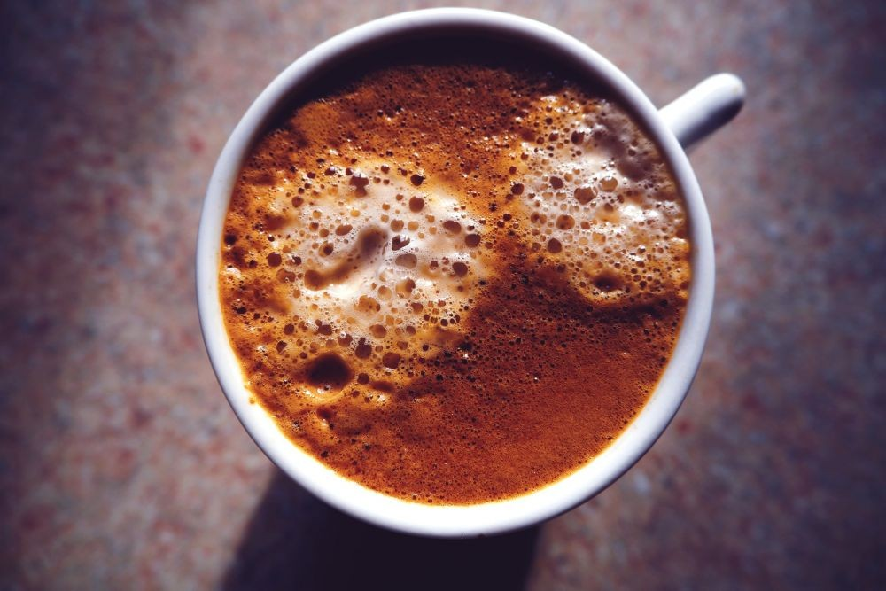
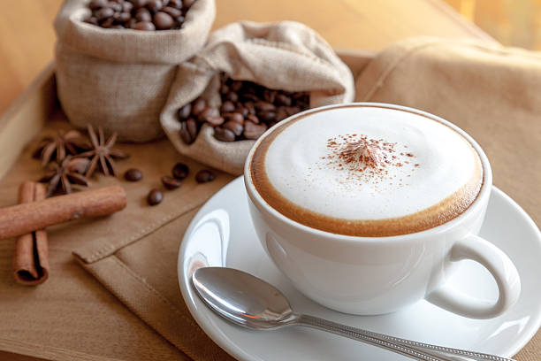
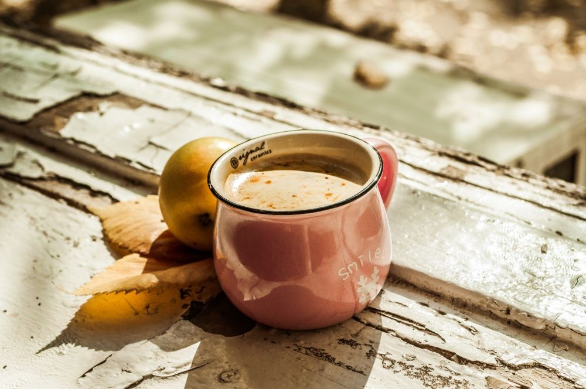
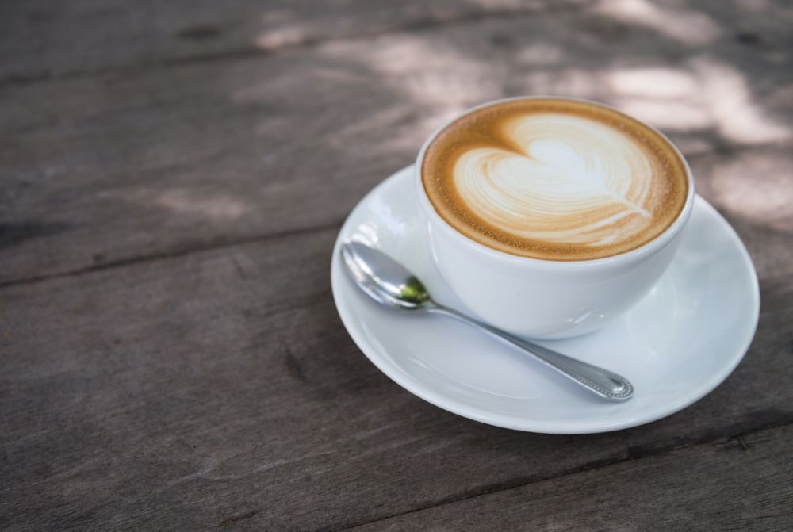
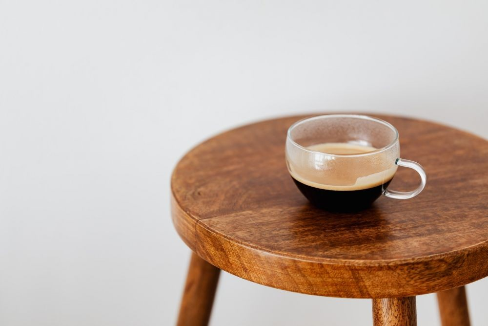
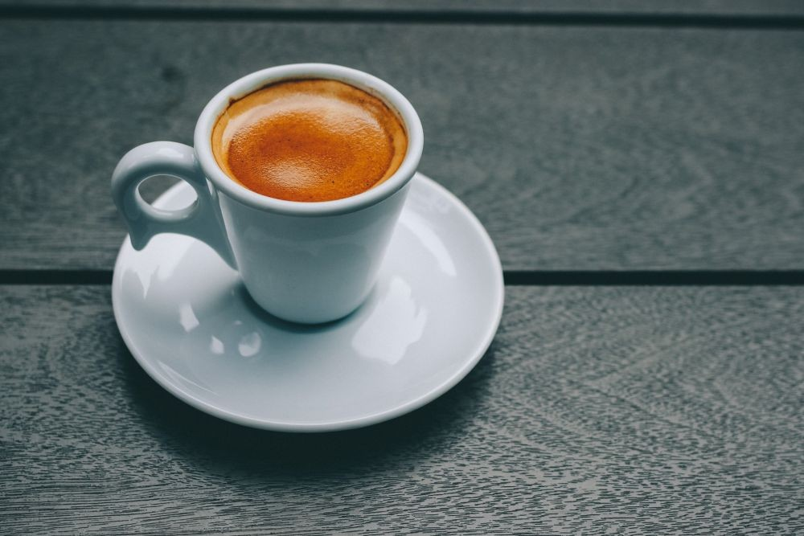
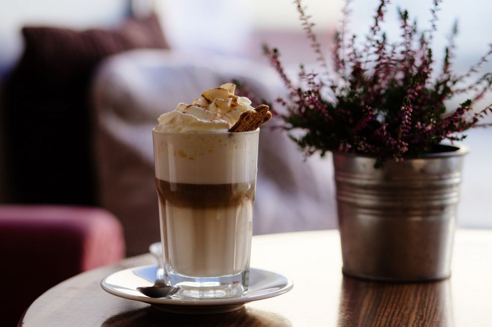
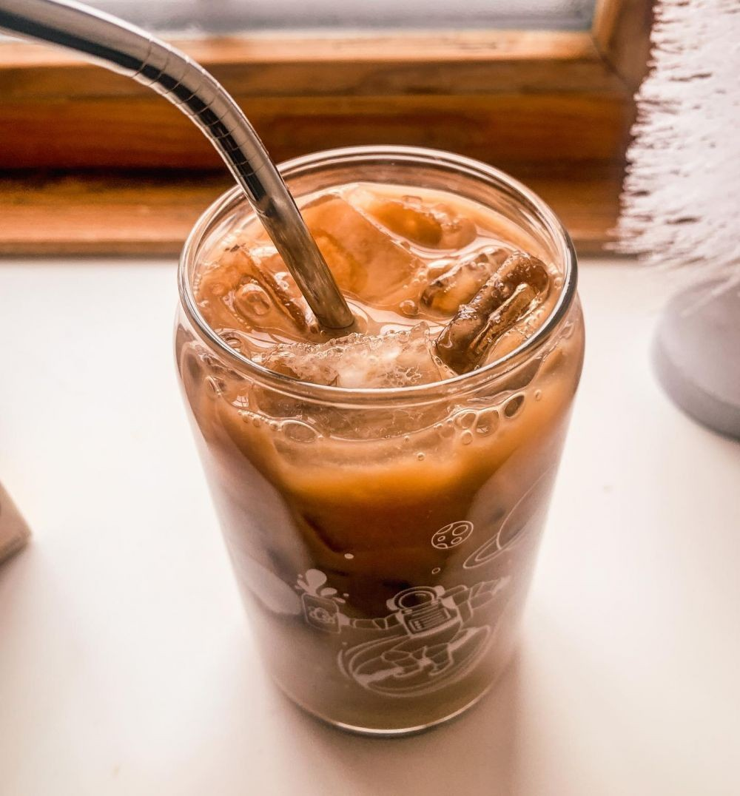
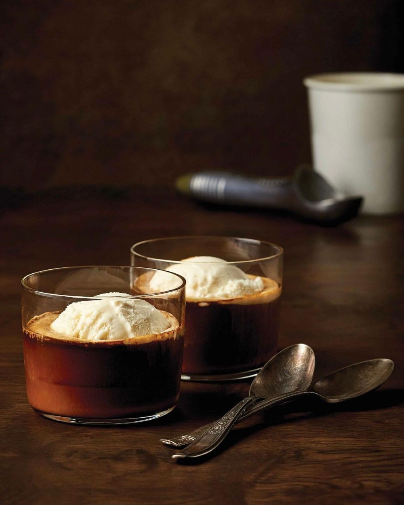
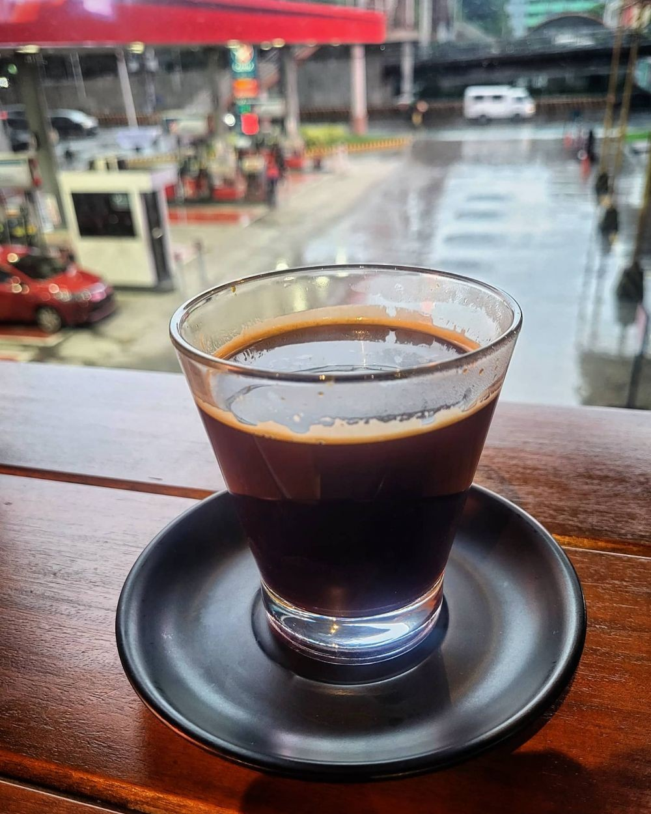

Kami dengan bangga mempersembahkan rangkaian kopi yang dipilih dengan cermat, disajikan dengan keahlian, dan diracik dengan cinta. Setiap cangkir kopi yang kami sajikan adalah cermin dari dedikasi kami untuk menghadirkan pengalaman kopi yang tak terlupakan bagi Anda.
Dalam setiap tegukan, Anda akan menemukan perpaduan sempurna antara aroma yang memikat, cita rasa yang kaya, dan kehangatan yang menyenangkan. Dari espresso yang kuat hingga latte yang lembut, kami memiliki pilihan yang memuaskan setiap selera dan memenuhi setiap keinginan Anda.
| Gambar | varian | Deskripsi | Harga |
|---|---|---|---|
|  | Espresso | Espresso merupakan salah satu jenis minuman kopi murni, karena proses pembuatannya tidak menggunakan campuran bahan apa pun, termasuk gula dan susu. Rasa dan aroma kopi ini sangat kuat. Dilihat dari teksturnya, kopi espresso berwarna hitam pekat dan terdapat buih putih di bagian atasnya yang terbentuk dari minyak dalam biji kopi. Kalorinya paling rendah, biasanya espresso disajikan dalam cangkir khusus berukuran 30 mililiter. | Rp 28.000 |
|  | Cappucino | cappucino merupakan minuman tradisional khas Italia. Terbuat dari dua komposisi bahan utama berupa textured milk dan espresso dengan rasio 1:1. Kopi jenis ini disajikan dalam cangkir berkapasitas 88 mililiter hingga 177 mililiter. Lalu, diberi foam susu dan bubuk cokelat pada lapisan atasnya. | Rp 23.000 |
|  | Latte | Kopi latte kami disiapkan dengan menggunakan biji kopi terbaik yang dipanggang dengan cermat untuk menghadirkan cita rasa yang mendalam dan khas. Ditambah dengan susu segar yang dipanaskan dengan sempurna untuk menciptakan busa lembut yang menggoda. | Rp 25.000 |
|  | Macchiato | Kopi macchiato adalah perpaduan ideal antara kekuatan kopi espresso yang tajam dan sentuhan lembut susu. Sebagai sajian yang sederhana namun bermakna, keseimbangan rasa antara pahitnya espresso dan manisnya susu memberikan pengalaman kopi yang mendalam dan memuaskan. | Rp 29.000 |
|  | Americano | Americanomu adalah kopi yang sederhana namun memukau, menyajikan kekuatan espresso yang mendalam dengan sentuhan air panas yang menyegarkan. Di balik kesederhanaannya, kopi Americano mempersembahkan pengalaman kopi yang kuat dan menyegarkan. | Rp 31.000 |
|  | Mocha | Dengan paduan sempurna antara cokelat yang lembut dan espresso yang kuat, Mocha mempersembahkan cita rasa yang menawan. Rasa manis cokelat yang berpadu dengan rasa pahit kopi menciptakan harmoni rasa yang tak tertandingi. | Rp 27.000 |
|  | frappe | Kopi Frappe adalah penyegaran sempurna dalam bentuk minuman kopi yang lezat dan menyegarkan. Dengan kombinasi unik antara kopi yang dingin, es batu, susu, dan pemanis, Frappe adalah minuman yang menghadirkan kenikmatan sejuk di setiap tegukan. | Rp 24.000 |
|  | Cold Brew | Kopi Cold Brew adalah minuman kopi yang diseduh dengan hati-hati dalam air dingin selama waktu yang cukup lama, menghasilkan minuman yang segar, ringan, dan penuh cita rasa. Di setiap tegukan, Cold Brew menyajikan pengalaman kopi yang menyegarkan dan memikat. | Rp 32.000 |
|  | Affogato | Affogato adalah sajian kopi yang unik dan memikat, menggabungkan kelembutan es krim dengan kekuatan espresso yang mendalam. Dalam setiap tegukan, Affogato menghadirkan pengalaman kopi yang memuaskan dan memanjakan. | Rp 28.000 |
|  | Red Eye | Red Eye adalah kombinasi yang memukau antara espresso segar dengan tambahan shot espresso tambahan. Gabungan ini memberikan energi ekstra yang dibutuhkan untuk memulai hari dengan semangat atau untuk menjaga semangatmu tetap berkobar sepanjang hari. | Rp 26.500 |